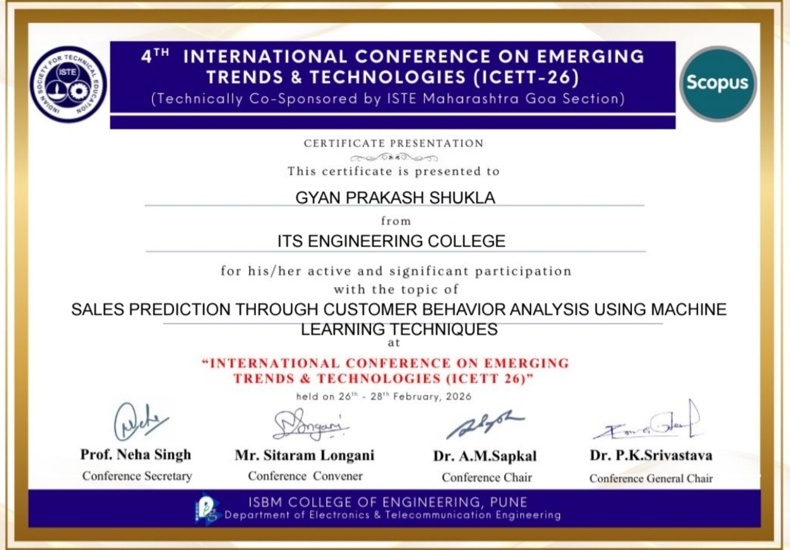
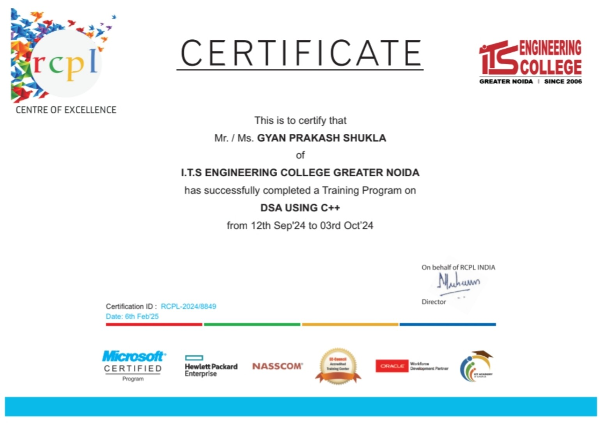
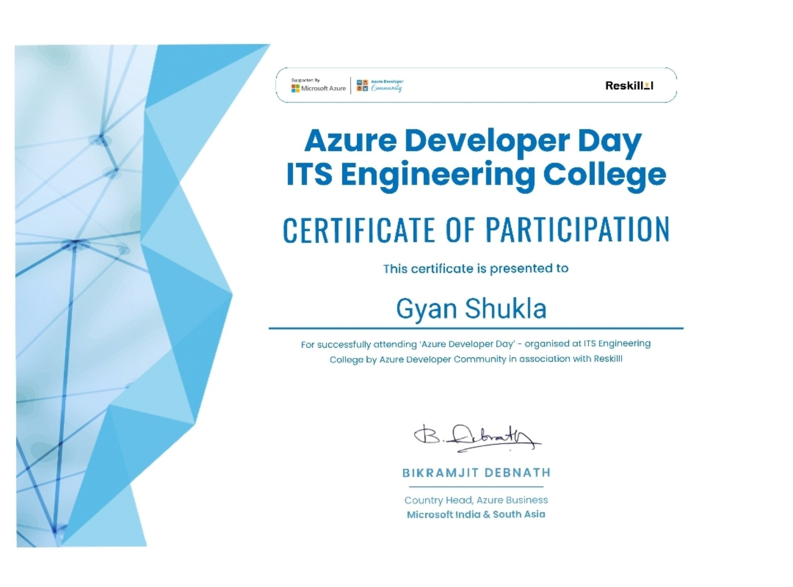
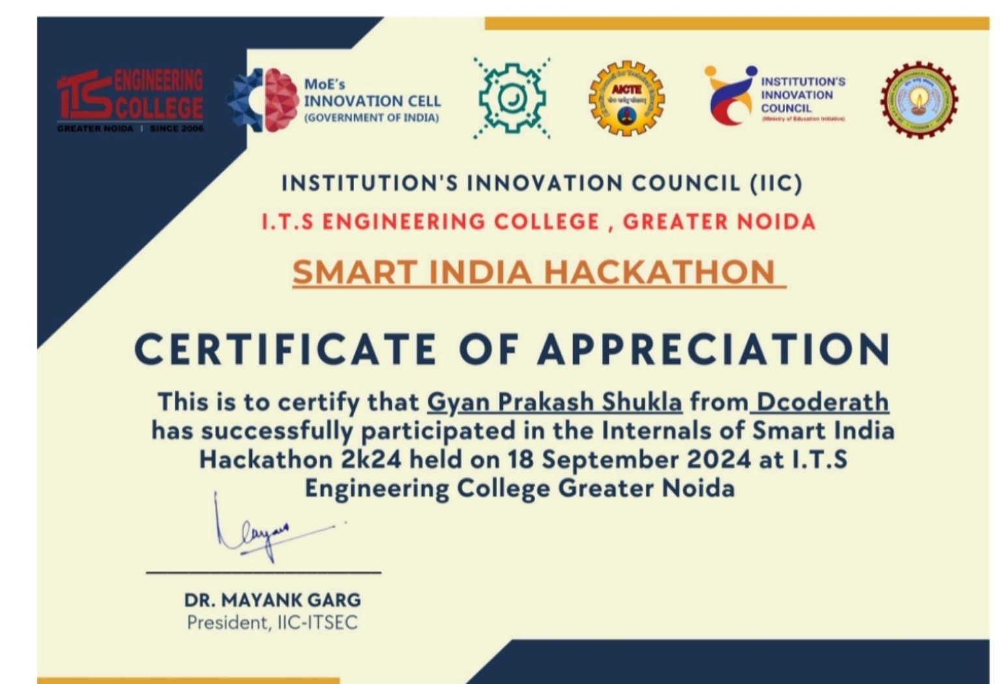
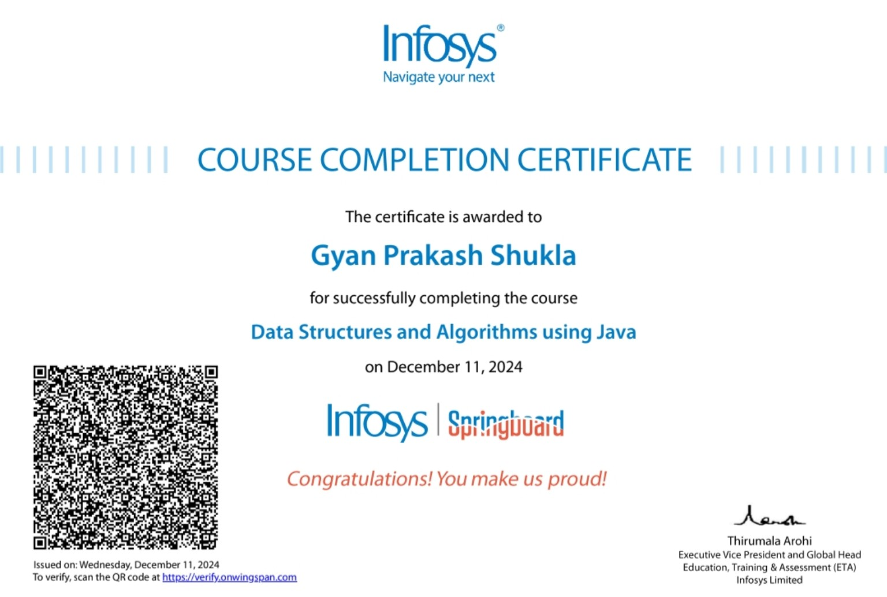
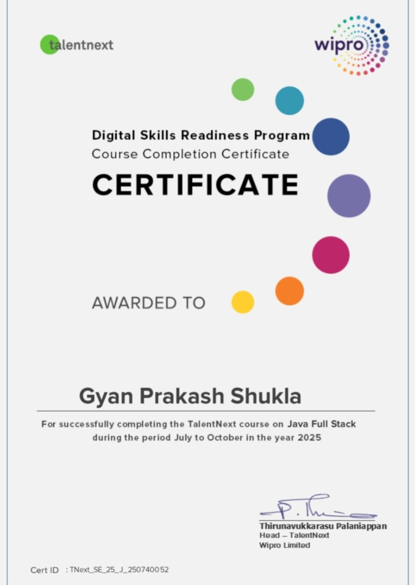

Programming
Java · Python · C++ · JavaScript
COMPUTER SCIENCE · JAVA BACKEND · DEVOPS
I'm Gyan Prakash Shukla, a Computer Science graduate interested in backend development, databases, Docker, event-driven systems and emerging AI technologies.
ABOUT ME
I completed my B.Tech in Computer Science Engineering from ITS Engineering College. I enjoy learning by building real projects and understanding how different systems connect.
My current focus is on Java backend development and DevOps-oriented technologies such as Docker, PostgreSQL, Kafka and OpenSearch. I also enjoy exploring AI tools and using technology to solve practical problems.
CAREER OBJECTIVE
To build a career in backend development and DevOps where I can apply my Java, REST API, database and containerization knowledge, contribute to practical software systems, and continuously grow through hands-on learning.
SKILLS & TOOLKIT
Focused on fundamentals, hands-on practice and understanding the complete application flow.
Java · Python · C++ · JavaScript
Quarkus · REST APIs · Maven · JSON
SQL · PostgreSQL · MySQL · Excel
Docker · Docker Compose · Kafka · Git · OpenSearch
SELECTED WORK
A REST-based order pipeline that accepts USD orders, converts them using an external exchange-rate API, stores the order in PostgreSQL, publishes an event to Kafka, and indexes the event into OpenSearch for analytics.
A research-oriented project focused on analysing sales patterns and customer behaviour through data-driven methods.
A backend service concept for tracking lecture attendance, designed around REST APIs and PostgreSQL persistence.
CERTIFICATES & ACHIEVEMENTS
Selected certificates and participation recognitions from academic, technology and industry learning activities.

Presentation on Sales Prediction through Customer Behavior Analysis using Machine Learning Techniques.
View Certificate ↗
Training Program completed through the Centre of Excellence at ITS Engineering College.
View Certificate ↗
Certificate of participation for Azure Developer Day at ITS Engineering College.
View Certificate ↗
Certificate of appreciation for participation in the internal Smart India Hackathon round.
View Certificate ↗
Course completion certificate from Infosys Springboard.
View Certificate ↗
Course completion certificate from the Wipro TalentNext Digital Skills Readiness Program.
View Certificate ↗EXPERIENCE & EDUCATION
My professional experience has strengthened the communication, problem-solving and teamwork skills I bring into technical work.
Handled customer conversations, understood problems, provided solutions and supported day-to-day operations while coordinating with junior team members.
Computer Science Engineering. Built technical foundations across programming, databases, software development and emerging technologies.
Participated in IEEE conference and technology hackathon activities, including coordination and event organization.
Learn the fundamentals.
Build something real.
My approach to growing in technology.